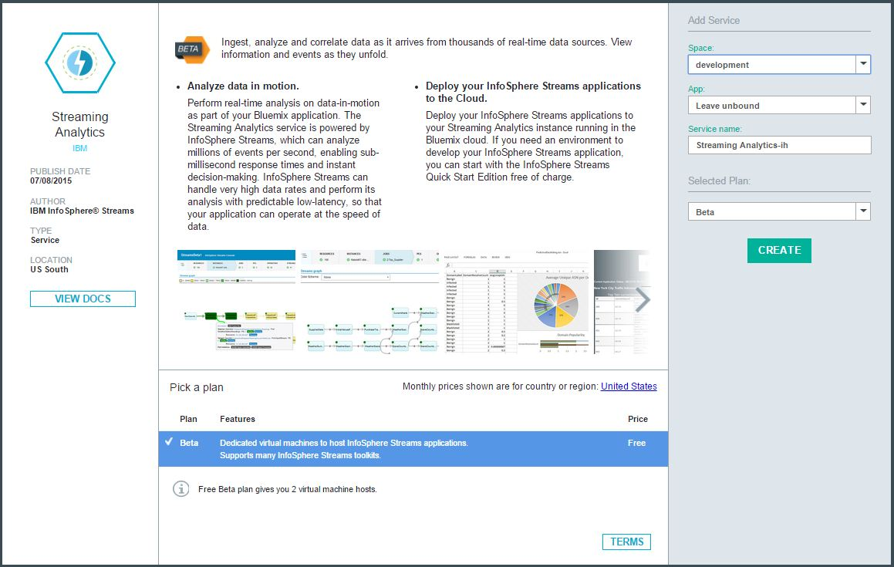
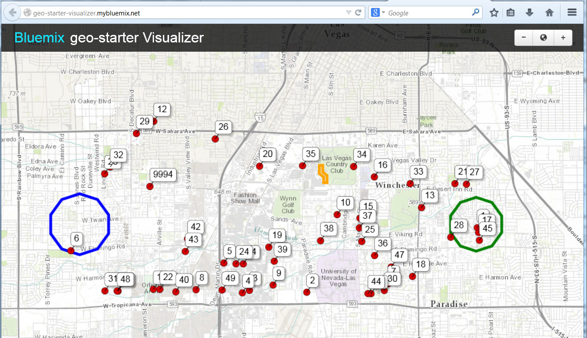

 <!-- Portfolio Modals -->
<div class="portfolio-modal modal fade" id="cloud" tabindex="-1" role="dialog" aria-hidden="true">
    <div class="modal-content">
        <div class="close-modal" data-dismiss="modal">
            <div class="lr">
                <div class="rl">
                </div>
            </div>
        </div>
        <div class="container">
            <div class="row">
                <div class="col-lg-8 col-lg-offset-2">
                    <div class="modal-body">
                        <h2>Cloud</h2>
                        <hr class="star-primary">
                            <div class="resiliencyText"> 
                                <h3>Streaming Analytics Service Beta in IBM Bluemix&trade;</h3>
                                <div >&nbsp;</div>
                                
                                <p>Running and scaling real-time analytics just got easier with the introduction of IBM's Streaming Analytics <a href="https://www.bluemix.net">Bluemix</a> service. Simply develop your applications locally using IBM Streams and then deploy those applications in the cloud using IBM's Streaming Analytics service. <a href=" https://developer.ibm.com/streamsdev/docs/streaming-analytics-now-available-bluemix/">Get started now using the free trial</a>.</p>
                                <h3>Geospatial Analytics service in IBM Bluemix&trade;</h3>
                                <div >&nbsp;</div>
                                
                                <p>The Internet of Things already connects billions of devices, with forecasts predicting steep growth rates in the coming years. Many of these devices, such as smartphones and connected vehicles, are mobile. Awareness of the location of on-the-move devices opens up exciting new application opportunities. Support for these new applications requires highly scalable services that can analyze high volumes of data in real time. <a href="https://www.ng.bluemix.net/docs/#services/geospatial/index.html">Get started on the cloud fast and for free here</a>.</p>
                            </div>
                        <button type="button" class="btn btn-default" data-dismiss="modal"><i class="fa fa-times"></i> Close</button>
                    </div>
                </div>
            </div>
        </div>
    </div>
</div>

